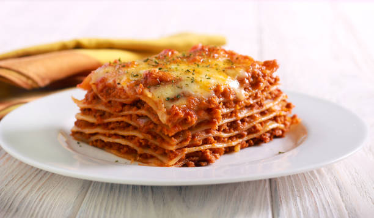

How to make Lasagna

Why this lasagna?
There are plenty of lasagna recipes on the internet, so why choose this one
over any other? Becuase this one is perfection. It has been one of the most
popular recipes since its creation over 20 years ago.
Ingredients
- Italian Sausage
- 1 Onion and 2 Cloves of Garlic
- 1 Can crushed tomatoes, 2 Cans Tomato Sauce, 2 Cans Tomato Paste
- 2 tbsp Sugar
- 1 Egg
- Parsley, Dried Basil Leaves, Salt, Italian Seasoning, Fennel Seeds, Black Pepper
- Lasagna Noodles - Store Bought or Homemade
- Parmesan, Mozzarella, and Ricotta cheese
Instructions
- Make the meat sauce.
- Cook the noodles.
- Make the ricotta mixture.
- Layer the lasgna.
- Cover with foil.
- Bake at 375°F for 25 minutes.
- Bake for another 25 minutes uncovered.